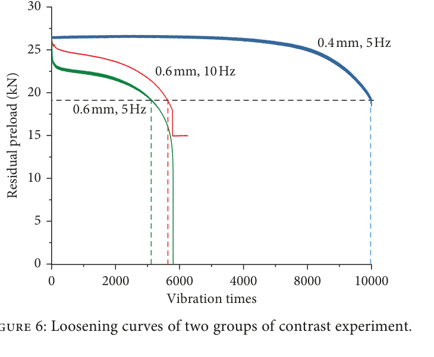
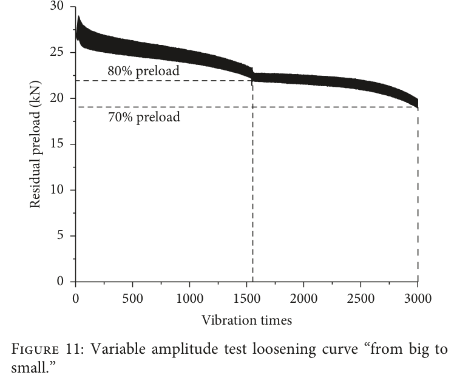

Yang 2019 — estudo de caso— case study
M10, Junker transversalM10, transverse Junker
Figura do artigoPaper figure


Figura(s) originais do artigo (recorte do PDF) — a fonte dos pontos que foram digitalizados.Original figure(s) from the paper (PDF crop) — the source of the digitized points.
Condições do ensaioTest conditions
| ReferênciaReference | Yang et al. (2019). Shock and Vibration 2036509 · doi:10.1155/2019/2036509 |
| ParafusoBolt | M10x1.5 |
| Pré-carga F0Preload F0 | 24–27 kN |
| AmplitudeAmplitude | ±0.40–0.60 mm |
| FrequênciaFrequency | 5, 10 Hz |
| Família / nº de curvasFamily / curves | transverse · 5 |
| MAE medianomedian | 0.019 |
⚠ protocolo de amplitude variável
Informações do artigo — aparato, corpo-de-prova, matriz de ensaiosPaper information — apparatus, specimen, test matrix
Yang 2019 (Shock & Vibration) — M10 variable-amplitude loosening life
Citation: Yang, G. et al., "Experimental Study and Life Prediction of Bolt Loosening Life under Variable Amplitude Vibration", *Shock and Vibration* 2019:2036509. DOI: 10.1155/2019/2036509 (open access, CC BY) PDF: pdfs_open_access/yang2019_sv_M10.pdf (= BAS_V2_papers/A.../Experimental Study and Life Prediction of Bolt Loosening Life under Variable Amplitude Vibration.pdf)
Apparatus
- Transverse-vibration loosening rig on an electro-hydraulic fatigue tester: two steel
plates bolted together; the upper plate is driven at set displacement amplitude and frequency; residual axial preload monitored continuously.
- Paper first shows (Fig 6) that frequency (5 vs 10 Hz) barely matters while
displacement amplitude dominates — justifying displacement amplitude as the damage driver (V2 disp-mode premise).
- Loosening thresholds tracked at 80% and 70% residual preload.
Specimen
- M10 high-strength bolts (grade ~10.9 class), standard preload per code ≈ 26 kN
(achieved initial values 24–29.5 kN vary per test).
Trial matrix
| Test | Amplitude | Freq | Base preload (kN) | Cycles |
|---|---|---|---|---|
| Fig 6 contrast | 0.4 mm | 5 Hz | 26.4 | 10,000 (reaches 19.2 kN) |
| Fig 6 contrast | 0.6 mm | 10 Hz | 25.5 | ~5,300 to 70% |
| Fig 6 contrast | 0.6 mm | 5 Hz | 24.0 | ~5,600 to 0 |
| 5 constant-amplitude grades | (table data already in extracted_csv/09_Yang_2019_*) | 5 Hz | ~26 | — |
| Fig 10 variable amp | small→large blocks | 5 Hz | 27.2 (80%=21.8) | ~3,830 |
| Fig 11 variable amp | large→small blocks | 5 Hz | 27.3 | 3,000 to 70% |
Digitized curves
| CSV | Figure | pts | Normalization base |
|---|---|---|---|
| yang2019_M10_amp0p4_5Hz.csv | 6 | 12 | 26.4 kN |
| yang2019_M10_amp0p6_10Hz.csv | 6 | 10 | 25.5 kN |
| yang2019_M10_amp0p6_5Hz.csv | 6 | 14 | 24.0 kN |
| yang2019_M10_varamp_small_to_large.csv | 10 | 14 | 27.2 kN (starts ~1.08: tightening overshoot band) |
| yang2019_M10_varamp_large_to_small.csv | 11 | 15 | 27.3 kN (note step at ~1,550 cycles = amplitude switch) |
Digitization caveats
- Band-center readings of thick envelope traces; error ±0.3 kN (±0.01 F/F0).
- 0.6 mm/10 Hz trace has a sensor artifact after 5,300 cycles (steps to a 15 kN hold) —
CSV truncated at the 70% crossing.
- Variable-amplitude tests switch amplitude blocks mid-test (Fig 10 ramps up, Fig 11 ramps
down; switch visible as slope change / small step) — these are SEQUENCE tests, not constant-condition: use for accumulation-rule validation, not single-condition fitting.
V2 calibration mapping
- M10 = size point between M8 and M12 for cross-size validation of
Phi_tr_correction. - Fig 6 frequency pair (0.6 mm at 5 vs 10 Hz) directly validates V2's
frequency-insensitivity assumption in disp-mode.
- Variable-amplitude curves test whether V2's state variables (
W_slip_acc,D, wear
depth) accumulate correctly across amplitude blocks — a linear-accumulation benchmark (paper proposes a Miner-type rule for loosening).
Modelo vs dadoModel vs data
Cada card = uma curva digitalizada deste estudo: a linha é a previsão do modelo (config adotada, do store canônico) e os pontos são o dado medido; o badge traz o MAE.Each card = one digitized curve from this study: the line is the model prediction (adopted config, from the canonical store) and the dots are the measured data; the badge shows the MAE.
ReprodutibilidadeReproducibility
Cada card tem ↓ CSV (modelo + dado da curva). Os CSVs digitalizados originais ficam em Models/CALIBRATION_AND_VALIDATION/curve_library/digitized_csv/; a curva do modelo vem do store canônico (config adotada por fonte). Para reproduzir localmente:Each card has ↓ CSV (curve model + data). The original digitized CSVs live in Models/CALIBRATION_AND_VALIDATION/curve_library/digitized_csv/; the model curve comes from the canonical store (adopted per-source config). To reproduce locally:
Ver também o guia de uso do programa e a metodologia.See also the program usage guide and the methodology.